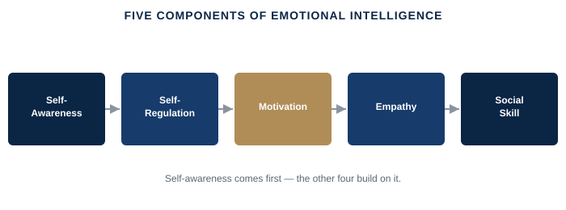

Your team doesn't remember your best decision as much as they remember how you were when you made it. What separates leaders who stay effective under pressure from those who don't is rarely IQ — it's what you do with what you feel, in the moment it counts.
Staying clear-headed in the room where a decision goes badly; giving hard feedback without triggering defensiveness in the other person; reading what a tense negotiation or a silent team actually needs before you speak.
Psychologist Daniel Goleman's research popularized emotional intelligence as a leadership skill in its own right, built on five capacities: self-awareness (knowing what you're feeling and why), self-regulation (choosing your response instead of being run by the emotion), motivation (channeling emotion toward a goal rather than reacting to it), empathy (reading what others are feeling, even when they don't say it), and social skill (using all of the above to move a room, not just survive it). None of this means suppressing emotion or performing a calm you don't feel — the leaders who actually hold a room under pressure are the ones who notice the emotional data early enough to choose what to do with it, instead of discovering it later in what they said.

A simplified, educational adaptation of Daniel Goleman's five components of emotional intelligence.
What separates reacting from responding → Goleman's five components, applied to your next hard conversation.
Extended video (15-25 min), an original PDF framework/checklist, a practical application workbook, and a curated summary of Daniel Goleman's Emotional Intelligence and Susan David's Emotional Agility.
Free if you’re an active coaching client · Subscription access for the general public opens soon.